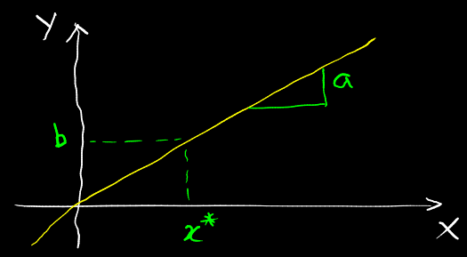
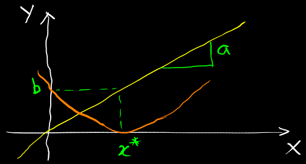
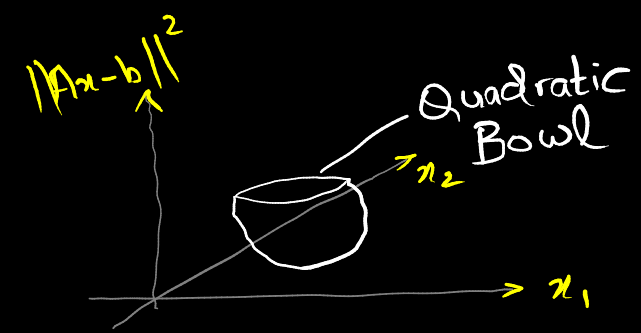
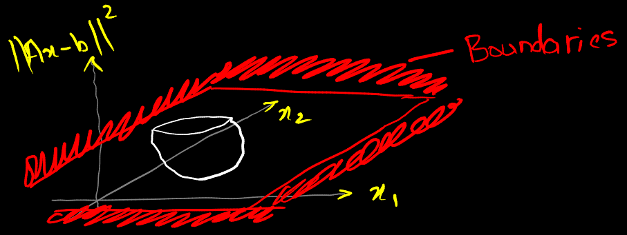

$ax\approx b$ is a standard operation in linear algebra. It represents the aim of finding the best solution for $x$ such that the LHS is approximately equal to the RHS.

$ax \approx{b}$
There are only a few things that $a$, $x$ and $b$ can do. $a$ is the slope. $x^*$ is the solution to be found such that $ax^* = b$.

The quadratic curve of least squares.
$\|ax-b\|^2$ indicates that we're going to score all the different options along the parabola to find the lowest point on the quadratic curve. When the curve touches 0, $ax=b$. The 2 values diverge as the curve moves farther from 0.
If slope $a$ starts getting small, the solutions start getting worse - we would need a bigger $x$ to achieve the same $b$.
With constraints
Even when the method isn't able to achieve the perfect solution, we'd still like to be able to say how good any given solution is. We want to be able to add constraints - the solution isn't allowed to go past a certain $x$ i.e. pick the smallest point on the curve that's within a certain regime. This would be a richer class of optimisations but it's still based on the fundamental idea of first scoring all the points (on the parabola) and then finding the minimum of it.
An example of this formulation would be:
$$
min_x \quad s.t. x\leq 2 \quad \|ax-b\|^2
$$
This equation says minimise over $x$ subject to $x \leq 2$ (the boundary of the search, the regime, the stop condition).
We've made a scoring function for all the possible $x$s
We're limiting the search to the constraint $x \leq{2}$
We find the lowest point
This is a more robust formulation because we're able to put more information into it.
Linear higher dimension (vector/matrix) case
Without constraint
$$
Ax \approx b
$$
The matrix case is only a little bit more interesting but super powerful. When things are unconstrained, the minimisation is done by finding the place where the gradient of the cost function (the quadratic $\|Ax-b\|^2$) is minimum. Since we know this is a convex bowl (with the ends) pointing up, it's enough to find any point where the gradient is $0$:
$$\begin{align*}
\frac{\partial}{\partial x} \|Ax-b\|^2 &=
\frac{\partial}{\partial x} [x^T A^T Ax - b^T Ax - x^T A^T b + b^2] \\
&= 2x^T A^T A - 2b^T A = 0 \\
(x^*)^T &= b^T \underbrace{A (A^T A)^{-1}}_{\text{Transpose of the} \atop \text{pseudo-Inverse}} \\
x^* &= A^{\dagger}b
\end{align*}$$
$A (A^T A)^{-1}$ has no $b$ in it. That's why to take the pinv, we don't need to know $b$ to use it; because the solution is linear in $b$, we can separate out $A$ and $b$. It is kept in the form of the transposes for convenience.

The generalisation of the above parabola is a quadratic bowl.
In higher dimensions, the parabola turns into a quadratic bowl. The axes are $x_1$, $x_2$ and the objective $\|Ax-b\|^2$. We score every value $x$ by the cost function $\|Ax-b\|^2$ and find the minimum of it.
The quadratic form is given by $[x^T A^T Ax - b^T Ax - x^T A^T b + b^2]$ but the shape is given by $A^T A$ in $x^T A^T Ax$.
When $A$ starts having small singular values, the bowl starts elongating just as in the case of the parabola with smaller slopes. It can elongate more or less in some directions/dimensions. As it gets long, the minimum $x$ starts leaving it, i.e. gets bigger.
With constraints
We can add boundaries/limits to the problem i.e. find the best solution using the score function $\|Ax-b\|^2$ but don't go past some linear constraints (some reasonable velocities for example). This is not the only generalisation but this is the one that is used in the lectures.
$$
\|Ax-b\|^2 \quad s.t. \; \underbrace{Cx = d}_{\text{Linear constraint}}
$$

The generalisation, but with boundaries.
A problem like this that has a convex quadratic objective (we know that this bowl is going up) and linear constraints is called a convex quadratic program. It's an important class of optimisation problems. Quadratic programs cannot be solved with pen and paper unless they're very very small. There are efficient algorithms for solving them that can be run in real time at high speeds.